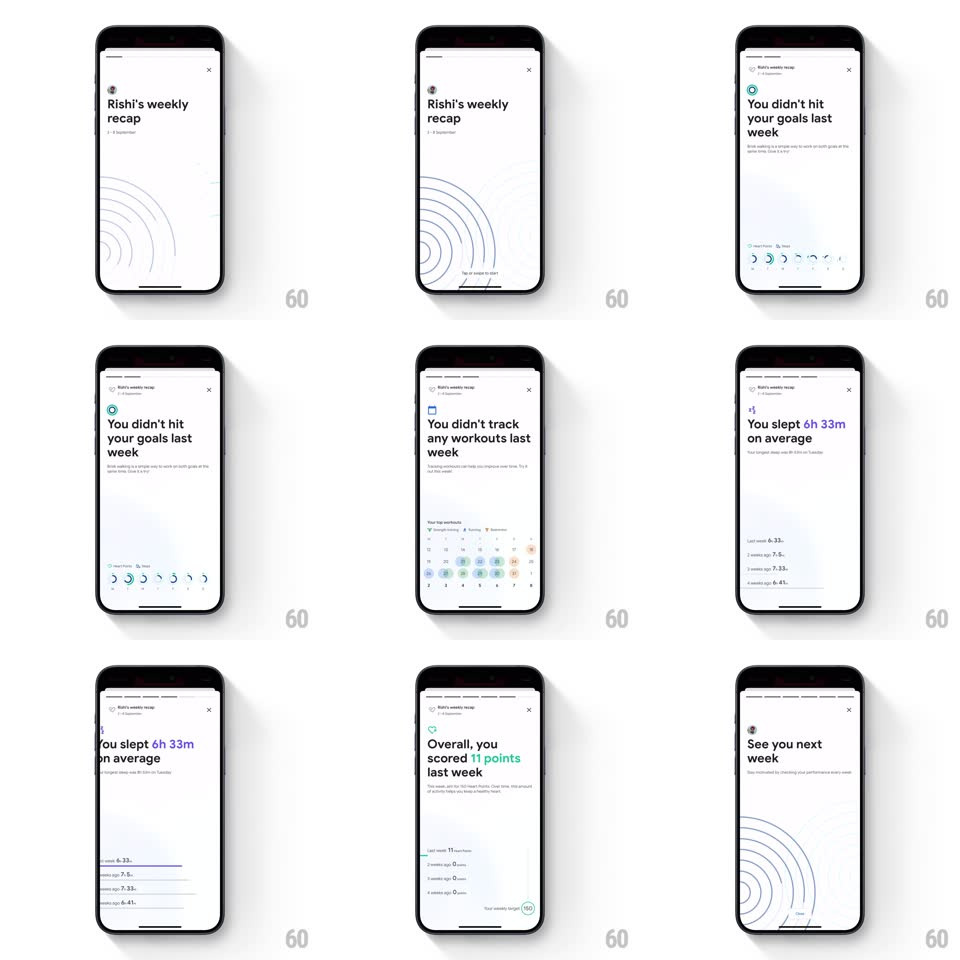

Media
Frame-by-frame

Rebuild this animation 1:1: Google Fit's weekly recap story sheet - from the Activity screen a sheet opens with "Rishi's weekly recap" and auto-advancing story pages, each animating its data in: progress rings, a calendar dot grid, a sleep bar chart, and a points summary.

Rebuild this animation 1:1: Google Fit's weekly recap story sheet - from the Activity screen a sheet opens with "Rishi's weekly recap" and auto-advancing story pages, each animating its data in: progress rings, a calendar dot grid, a sleep bar chart, and a points summary.
## Integration
Integration: stack-agnostic spec - springs given as stiffness/damping, timed motions as duration + curve; map every value to your framework and animation library of choice.
## Scene
White sheet: progress ticks top, header with avatar + "Rishi's weekly recap", faint concentric arc pattern behind. Pages: "You didn't hit your goals last week" (ring row), "You didn't track any workouts last week" (calendar grid of day dots), "You slept 6h 33m on average" (bar chart), "Overall, you scored 11 points last week" (points list), "See you next week".
## Motion spec
Pattern: auto-advancing data story.
- Sheet slides up (spring ~300/28, ~350ms); progress ticks appear top (one per page).
- Each page: headline fades + rises 10px (250ms), then its data animates: rings sweep to their values (600ms, staggered 100ms), calendar dots pop in row by row (60ms per row), bars grow from the baseline (500ms, ease-out, staggered 60ms), points count up (0 -> 11, 800ms).
- Pages auto-advance every ~3s: current page slides left + fades (250ms), next enters from the right (300ms); the active progress tick fills over the page's dwell time (linear, matching the 3s).
- Tap right/left edge skips forward/back (same slide, immediate); long-press pauses the tick.
- Final page: arcs pattern brightens slightly; sheet dismisses by swipe-down (drag 1:1, release past 30% to close, 300ms spring otherwise).
## Calibration
- Numbers are the payload: every chart animation must finish well before the page advances.
- Tick fill = dwell timer; skipping a page cuts its tick instantly.
## Reduced motion
Pages crossfade; charts appear at final values.
## Don't miss
- The tone is honest, not celebratory ("You didn't hit...") - animations stay calm, no confetti.
- The concentric arc motif books the sheet - faint on page 1, brighter at the end.